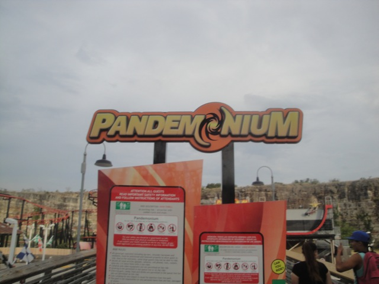

| |
Pandemonium Review

We're here at Six Flags Fiesta Texas, where we'll be reviewing Pandemonium. Once you get in the seat, you pull down the lap bar, buckle the seat, and wait. Once you dispatch, you'll turn and head towards the lift hill. But first, you must wait a little bit, so you stop and then wait. Oh, and the brakes on Pandemonium are pretty harsh. After waiting, you climb up the lifthill. If you happen to be sitting backwards, you'll feel funny as you climb up the lifthill. But once you crest the lifthill, it won't matter which way you face. You then start to roll down the twisted first drop. We aren't spinning much yet, but it's still a fun first drop. Very twisty. You gain a little speed there. But before you know it, you're rising up a hill, losing the speed we had gained before. We then head up and go through a couple of switchbacks. During the switchbacks, you don't spin too well. I mean, you do spin, but it's not that intense. We then spiral down another drop, gaining the speed that we lost before. We then go through another helix, which definetly helps our spinning. This takes us to a big swooping turn. This then leads us to a dip. Not much airtime, but fun. You then twist up into a helix before hitting the brake run. And the brakes suck due to their jerky nature. While not a bad ride, it's nothing special. And it's CERTAINLY not worth the huge waits that it gets. So if you wanna ride it, use the single riders line.
6/10
Location: Six Flags Fiesta Texas
Opened: 2007
Built by: Gerstlauer
Last Ridden: July 14, 2013
I have ridden this exact same ride at the following parks.
Six Flags Over Texas
Six Flags St. Louis
Pandemonium Photos


Home
|